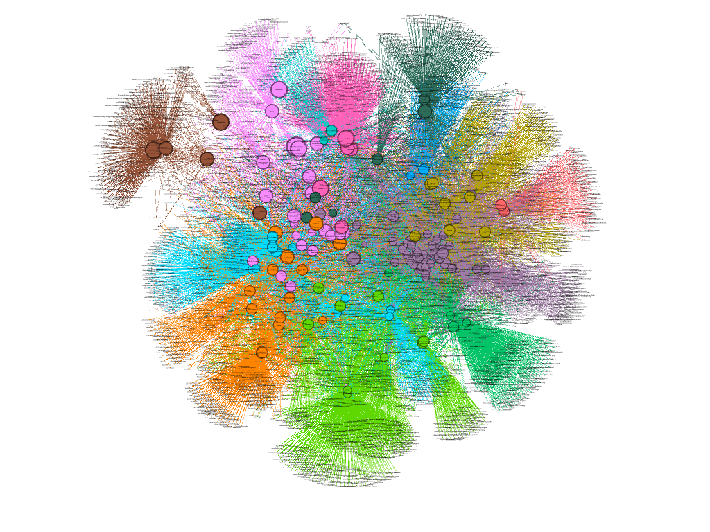

In this post, we will discuss the concept of community detection in network analysis. Community detection is a fundamental concept in network analysis that involves identifying groups of nodes that are more densely connected to each other than to the rest of the network. These groups are known as communities or clusters, and they represent substructures within the network that exhibit a higher degree of internal connectivity. We will explore a case study of community detection in a network of Wikipedia pages to illustrate the concept in practice.
To demonstrate community detection in practice, we will consider a network of Wikipedia pages related to data science topics. Each node in the network represents a Wikipedia page, and edges between nodes indicate hyperlinks between the corresponding pages. The goal is to identify communities of pages that are thematically related based on their hyperlink structure.
Tools: NetworkX, Snowball Sampling, Gephi
We will start by creating a network of Wikipedia pages using snowball sampling.
Snowball sampling is a technique that involves iteratively expanding a network by adding nodes and edges based on a set of initial seed nodes. In this case, we will select a single seed node corresponding to the word "data science" and expand the network by adding pages that are linked to the seed nodes.
from operator import itemgetter
import networkx as nx
import wikipedia
SEED = "Data Science".title()
STOPS = ("International Standard Serial Number", "International Standard Book Number",
"National Diet Library",
"International Standard Name Identifier", "International Standard Book Number (Identifier)", "Pubmed Identifier", "Pubmed Central",
"Digital Object Identifier", "Arxiv",
"Proc Natl Acad Sci Usa", "Bibcode",
"Library Of Congress Control Number", "Jstor")
todo_lst = [(0, SEED)] # The SEED is in the layer 0
todo_set = set(SEED) # The SEED itself
done_set = set() # Nothing is done yet
while layer < 2:
# Block 1: Remove current page from todo_lst and mark as processed
if not todo_lst:
break
del todo_lst[0]
done_set.add(page)
print(layer, page) # Show progress
# Block 2: Attempt to download the page
try:
wiki = wikipedia.page(page)
except:
layer, page = todo_lst[0] # Get next page if download fails
print("Could not load", page)
continue
# Block 3: Evaluate and process links
for link in wiki.links:
link = link.title()
if link not in STOPS and not link.startswith("List Of"):
if link not in todo_set and link not in done_set:
todo_lst.append((layer + 1, link))
todo_set.add(link)
F.add_edge(page, link)
# Block 4: Get the next page from todo_lst
layer, page = todo_lst[0]
print("{} nodes, {} edges".format(len(F), nx.number_of_edges(F)))
21318 nodes, 37891 edges
As we can see, the snowball sampling process has resulted in a network with 21,318 nodes and 37,891 edges. Even with a limited number of layers, the network has grown significantly in size.
In this part, we will truncate the graph to focus on a subset of nodes and edges for community detection using Gephi.
## Removing self loops
loops = list(nx.selfloop_edges(F, data=True, keys=True))
F.remove_edges_from(loops)
## Merging duplicate nodes in the graph
duplicates = [(node, node + "s") for node in F if node + "s" in F]
for dup in duplicates:
F = nx.contracted_nodes(F, *dup, self_loops=False)
duplicates = [(x, y) for x, y in [(node, node.replace("-", " ")) for node in F] if x != y and y in F]
for dup in duplicates:
F = nx.contracted_nodes(F, *dup, self_loops=False)
## nx.contracted_nodes creates a new node attribute called "contraction" whose value is a dictionary
## GrapML does not support dictionary attributes - hence we set the "contraction" to 0
nx.set_node_attributes(F, "contraction", 0)
# Create subgraph first
core = [node for node, deg in F.degree() if deg >= 2]
G = nx.subgraph(F, core)
# Remove all dictionary attributes from nodes
for node in G.nodes():
node_attrs = dict(G.nodes[node])
for key, value in node_attrs.items():
if isinstance(value, dict):
del G.nodes[node][key]
# Remove all dictionary attributes from edges
for u, v, data in G.edges(data=True):
edge_attrs = dict(data)
for key, value in edge_attrs.items():
if isinstance(value, dict):
del G.edges[u, v][key]
print("{} nodes, {} edges".format(len(G), nx.number_of_edges(G)))
# Save using the basic GraphML writer
nx.write_graphml(G, "cnads.graphml")
Now that we saved our graph as a GraphML file, we can import it into Gephi for visualization and community detection.
In our case study of the Wikipedia pages related to data science topics, community detection can help identify groups of pages that are thematically related - Here is a snapshot of the network visualization in Gephi:
